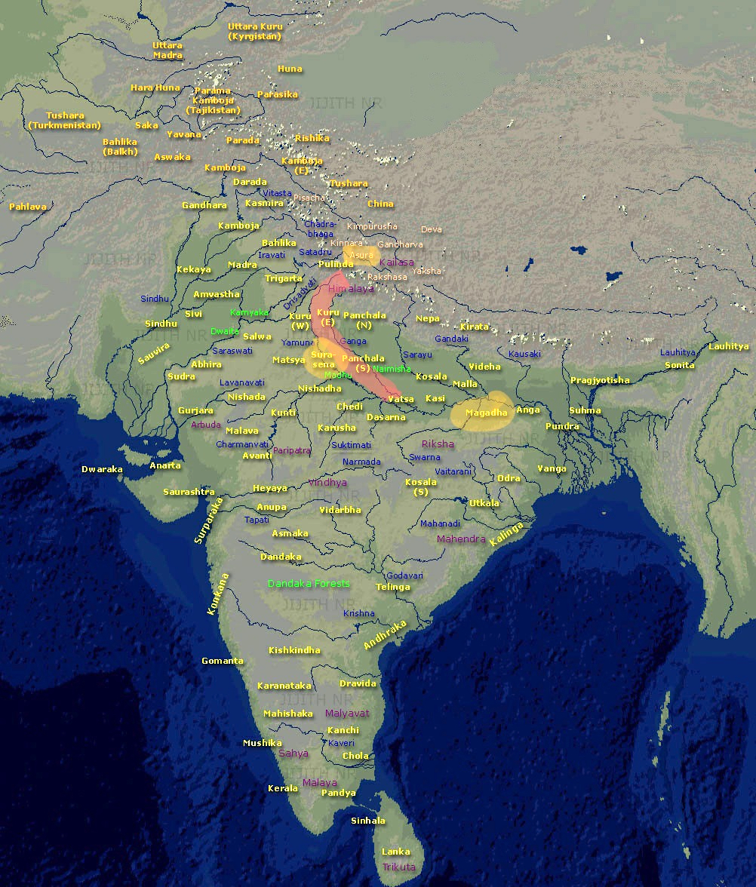

In the dense California redwoods, a man got surrounded in a massive forest fire. Not unusual for the Norcal summer . Luckily he was a climber. He selected a big Redwood and climbed up till he got high enough to breathe, and found a strong branch to sleep on. He tied himself and slept couple of hours. When he woke up, he felt hungry. There was nothing there up high. Birds had all flown away. He wondered if it was his destiny to die of the hunger rather than being burnt alive in that endless scorch.
Before he got a chance to curse the Gods, he saw a big beehive and also saw the honey dripping off of it. The rising smoke must have melted the nectar. The only problem : it was on a soft branch and of course he didn't want to wake up thousands of bees still closely guarding their life saving. He figured if he could move below the beehive (and somehow catch the dripping nectar) he could possibly see another sunrise. He did that, though in the process, he definitely rubbed few bees on the wrong side, who didn't waste any time in returning the favor.
An Angel was flying past in his chariot. His fairer friend, sitting besides, saw the massive fire. She asked him to take a swing down - to check if they could help someone.
We can't go on with our gifted lives with no attention to those who actually need our skills? - she urged her Angel. Probably guilty of her privileges.
Angel cautioned her for they were expressly forbidden from causing glitches in the lower worlds - but who may deny the fairy of charm her wishful musings. Even Rama couldn't convince Siya that a golden deer is nothing but a trap. The bridge between the left and right halves is a "protocol of submission" - not that of "reason!
He took a nose-dive and they both saw this intriguing scene - a strong able man in his mid thirties sitting on a dead branch that may break any time. And right below him fire was still raging high. From a distance, they couldn't see the man was aptly catching drops of honey directly into his open mouth. They also didn't see the bees were biting all over him. They were probably enraged on debasement of their earnest savings - and they wanted someone to pay the price.
His eyes, ears and lips swollen yet survival was paramount. It appeared the man wanted to live no matter what the quality of his life, and the extent of his struggle.
We must save this man! - said fairy. At the back of her mind the question that had always challenged her logic - why do humans love their lives of endless misery? I mean I am a fairy, even then it feels so boring! - She thought.
The angel still had reservations. He knew the rules!
Yet, out loud he surrendered - as you say my lady luck! Then he whispered into fairy's ear - We must make it look like a fair deal. I can´t change the destiny without approval from higher ups. The surveillance has gotten worse of late. They are keeping track of all off-route flights.
Sure! You do the talking - whispered back smiling fairy. She was excited. Her mate was willing to take on a potential ¨curse for life¨ to make her happy. The idea of breaking rules is always tantalizing to those comforted into layers of safety nets.
Angel stationed the chariot right above the man. He spoke as if he wanted to hide his voice - O man, kind fairy offers you a seat in the chariot for the divine honey you have broken up in this blessed beehive. If you share this Godly gift, you get a free ride back home. He made a ¨proposal¨.
In Hindi or Sanskrit, a proposal is called a
Prastaav...
The man thought he was hallucinating! When angel asked again, he convinced himself it was some sort of divine nectar. Despite all his misgivings, he wanted it all for himself. He assumed the gods had provisioned this gift solely for him - and look what great price he paid for this Amrut. I mean I am literally burning in fire and being bitten - at the same time. He thought it was this sacrifice that opened up this bounty. Is it going to to give me good health? Who knows it might make me immortal! But those questions are for later - he reasoned - for now let me grab all of it. No wonder now, he fathomed, this angel wants a piece out of my winnings. They always show up at the opportune moments - don't they - he thought to himself - not this time - this time this nectar of immortal life is mine - all of it!
He countered the proposal without courtesy or care - without even making an eye contact.
No - he said - go your way angel and enjoy your flight! Thanks - but no thanks - for I know your girl desperately wants this honey. Let her know it ain't for sale!
Angel looked at the fairy and gave the man another chance. His pitch louder - Listen O'dead man , if you didn't take the deal, then know you would die of the poison, and of course your sugar levels are already high not letting you think straight. You will probably burn in another half hour. Time is of the essence for your survival ! And even if you took the deal it would take the divine doctors many days to remove all the stings you got from the deathly bees!
O ya! - said the greedy man. More the angel tried to convince, more he got sure there was something very special in the honey.
Tired and irritated - for the heat was getting stronger by the minute - the angel and fairy flew away!
Whatever happened to the man is another story but surprised at what unfolded, the fairy asked the angel - how stupid can a man be! Why wouldn't he agree your proposal?
The angel smiled in relief - A proposal is always made by the one who needs something. And accepted (or rejected) by those who have the upper hand. Quite the opposite of ¨charity¨ where the rich offload their excesses ¨as is¨ and poor taketh whatever on offer.
O' my love - he said - If a proposal comes from the able, beneficiaries always question the motives. Only in a rare case sanity prevails. Such cases are the grace of God!
Amen! Grace of God it was - impressed with the wisdom of angel, she craved for more - tell me of such cases good angel. Talk to me. You kept my word and also saved us from altering the reality. She pressed herself closer to the Angel. Her eyes proud and aroused as she felt alive in a long time. She was anyways on the edge for this was her first outing in the wilderness. She had never gone off the proven route - particularly in the zero foot print 1 areas.
Angel thought for a while. He then told her the proposal that Maharishi Parāśara made to Matsyagandha at the dawn of new age in an obscure place Mathura - on the banks of river Yamuna - in northern province of India. An impossibility by any stretch of imagination, yet it worked, and created a race that went on to become Angels; and wizards! Those who believe and those who not. Those who have flying chariots. Those who save others from fires and also burn them alive. Those who could get as much divine nectar as they wanted from Amazon.com ! Yet they want more ..
Prastaav ..
It was as if Matsyagandha found a reason to live. Maharishi Parāśara got off the boat but he left a boatload of hope for Matsya. Every night she waited at the docks. She had gotten a new set of questions. What did Maharishi mean? Why would he even talk to someone like her. At times, she thought she was an insipid laughter for the Yogi — maybe he just wanted to let her feel good, other times she wanted to look beautiful — she must get herself ready for the purpose — but she knew no ways. She wanted to smell good though she couldn't afford Sandal wood. The hope and despair played the cycles of pains and joy. She was caught into duality of the prospects, and unlike the waves in Yamuna, waves of duality were hard to navigate.
She must go through this fire to harden herself for a path unknown.
One more subtle change happened. She discovered a new confidence in just being herself. For the first time, she saw her smell as a virtue. She felt she existed despite being all alone in this world. Maharishi's simple anecdote changed her self-perception for good - almost downside up! She wondered, why did she not see the simple reality the way she see it now !
8.1
About a year later, on the night of Vijya Dashmi — the tenth night of Hindu month Ashwin,Maharishi returned to the wharf. Entire Mathura was celebrating the auspicious autumn night to commemorate victory of Lord Rama over Ravana. A noble king versus a tyrant — good over evil. The middle of peak festive season in entire India, and more so in this part because of the perfect weather. Wet season (monsoons) ended almost a month ago in mid August (per English Calendar), to let this time of mid September dry with mild temperatures - and acceptable humidity. No one was expected working on the docks this night, except that Matsyagandha was there, for 'waiting' was her daily ritual — Karma.
Maharishi smiled at Matsya as if he expected her there. He didn't have the courage to ask her 'why'. Why wasn't she celebrating the night with the rest? He probably knew he was the one who put her to this test. And she sure came out with flying colors!
Matsya returned the smile as if she simply erased the wait of last four seasons. He asked her to ferry the boat to the island. She happily toed the boat into waters. As the boat got steady, she looked at Maharishi in anticipation. She could feel her time had come. The moment she was preparing herself for a year had arrived
Maharishi read her thoughts. She was an open book to him — uncorrupted and pious. Her big expressive eyes said what her lips would not. Without much ado, he asked her if she could give him a son. No preamble, no sweet romantic chatter. All he added — it was for a much bigger cause. A cause, she would appreciate in due course. And of course, she may ask anything in return for the favor of this service!
Service! — Matsya, though wildly imaginative, had never thought such a ‘service’ existed. To put it mildly, it was passionless. To say the truth, it was blunt! No one asks a woman for a child in their second meeting (spaced an year) without any courtship. She was poor but she wasn't sold out. She worked hard for a living and she bore the wrath of society for no apparent reason. Despite all the attempt to cancel her, she was a proud young woman. A part of her felt as if the man was total noob in worldly things. Even more than her. But other reassured her: he meant what he said — he is not here to steal! He is here to give!
He had a winner proposal for her if only she considered!
Both of them unaware that what
MaharishiaskedMatsyawas the biggest sacrifice a human could do. Soliciting a new born of a first time mother — be it a human or even an animal - is the most audacious of the 'asks' imaginable. Every cell of a mother's body works nine months, non-stop, to manifest a baby. Not only does she make flesh and blood, she even drafts milk for the new born — to ease the child into inhospitable world. This selfless act is the natural incidence ofKarm Yoga. Even for a pronouncedKarm Yogi, giving up on such a manifestation - the feat of binding consciousness to a biological form - is too much to ask. But none of them had this physical experience before. Neither comprehended the price of such a service was entire cosmos!
8.2
As the moment passed, Matsya staged a quick recovery. Years of training to handle unexpected discomforts - from those of prying eyes to the outreach of groping hands, helped her regain her rationale. She was definitely taken aback at the unexpected proposal. It was quite an anticlimax to the high hopes she had whipped up in her mind. She had no clue what to say and what to ask, but she knew Maharishi Parāśara was a Yogi. There was no one in Mathura who didn't know Maharishi. Since last meeting, her interest in the Yogi had peaked. She gleaned everything there was to know about him. He could have had any woman. Why then he chose her? He sure was not a womaniser. He wasn't doing it for fun - was he?
More clarity emerged with another passing thought! She knew he could bless her with whatever she wanted — she felt the aura of calm and the strength he exuded - that made her believe the stories of his wizardry - she had overheard commuters. Ever since their last meeting, she had wondered what she had in store. Her over sized imagination led her to many scenarios but none of them was to bear his child. For one, he wasn't attractive, nor did he took care to look one. But more importantly, she knew Maharishi would never take her (or anyone else) as a wife for his life was dedicated to the celibate work of god. Then why does he need a son? What exactly is the ‘bigger purpose’? She didn't realize, her curiosity already shifted to the ‘purpose’ - rather than the stigma of carrying a fatherless child.
She thought for a while. She wasn't even sure if he really wanted a baby or this was a way to ask for sex? Or he might be asking me as a wife! Why am I not sure? How do I seek clarity? Her mind chose to play a question for a question — the best strategy to seek more when uncertainty strikes. She whispered to herself — what would people say? As if there were people staring at her in the middle of the river.
Looking at Yogi she asked — how could I possibly hide such a thing from the village? She meant she wanted to be in, but how?
Boat was leaving the banks of Yamuna- heading mid stream. The rise and fall of waters simulated in her thoughts. She could hear herself breathing and it wasn't because she was rowing the boat alone. She could boat off this bank like a child would step into the walk of her mother. The anxiety stemmed from the surprise - no one had properly asked her out - ever - and here she had a Yogi - asking for a child! Does he like me or is he playing with me? Or is it something else?
And the fear of unknown! She had never imagined herself pregnant! It was simply beyond the basket of her thoughts.
Rishi Parāśara had a sigh of relief. First he didn't get a plain ‘no’, or was asked to jump off the boat. After all, his reputation was at stake. No matter how high a man in chain of command, in front of a woman he is still the one pleading for attention. And second, he too wanted it a furtive union. Not only was he not ready for a wife, he knew Matsyagandha must go on - for she had a larger role to play in her later life.
And he had a plan — I know a nice cavern hidden in the island. We may stay there. I will be around you entire pregnancy and will have no dearth of food or shelter. After couple days, I will have a pigeon sent to the village head that you took on a journey downstream with me, as a sailor. And that we were gone to get lifesaving herbs from the East where Yamuna meets the most pious river Ganga.
8.3
Let me add a bit on the geography of the place before we move forward :-
Rivers Ganga and Yamuna run parallel through the fertile plains of North India. They formed the boundaries of the powerful kingdom established (long back) by King Kuru . Shown as Kuru (West) and Kuru (East) in the map below. He built a grand capital in Hastinapur on the banks of Yamuna — nowadays known as Delhi, the capital of India. Hastinapur was around hundred miles upstream from Mathura.

An indicative map of greater India in Vaidik times around 5000 BC. Credits 2
Kuru's grandson King Shantanu currently ruled the place. Maharishi could have approached the king for help with herbs but they grew beyond his borders deep into kingdom of Magadha with capital in Patliputra.
Hastinapur and Patliputra had ups and downs in the political relations. Thus, the (imaginary) trip had to be clandestine. Technically, Rishies were free to travel across state boundaries and Maharishi was not even a native of Kuru-kingdom because his Ashrama was on the western bank of Yamuna — a vast land infested with many Rakshsa lords. After his early days of warring with Asuras in this area, Maharishi Parāśara helped Ugrasen take the reins of a new small kingdom named Sur Sena (Good people's army). Thanks to the "fire-traps" of Maharishi, most of the rebellions either left the place or were living a subdued life under cover.
Maharishi continued in his grand father's (Maharishi Vaśiṣṭha's) Ashrama, in the capital of Sur Sena — a mile upstream from (now) famous Vishram Ghat of Mathura.
The village where Matsya stayed, was run by an erstwhile Asura lord — Dashraaj. He was defeated by Maharishi but got his life back after he promised to a conformal lifestyle. That he did, but inside, he wanted to be important. His ambitions, still played young even though old age caught up on him. On the surface, he served the Ashrama and stayed in close with the ideology of Maharishi.
Asuras had their own kingdom run by Vrishaparvan — an Asura royal sage, though Asuras were spread beyond their indicated location. It is important to understand the difference between Asuras and Rakshasas. Raskshsas were the tribal population of "bigger built" who obviously wanted to continue with status quo because of advantage of their muscle power over animals and civilized humans. On the other hand Asuras were the educated humans who just didn't subscribe to Vaidik way of life. Many Asura lords naturally developed close ties with Rakshas as they had a common enemy in Vaidik way of life, but this is not to say that all Asuras or Rakshsas were inherently against scriptures (or the ones who believed in scriptures). In fact the palace of Pandavas - grand sons of Dwaipayana was built by a Rakshsa architect. The ideological boundaries weren't black and white.
Asuras were not against scientific discovery. They had their own weapon systems and they too worked hard to invoke celestial powers. They just didn't subscribe to the tenets of Vaidik Science.
I have highlighted the
Kuruterritory and the location ofMaharishi Parāśaraabode (inSur-Sena). The western boundary ofKurukingdom was riverYamunaand eastern side was bound by riverGanga. Both major water ways for transport and source of irrigation in prosperousKuruempire.
An advantage of staying in Sur-Sena was no Kuru kingdom laws applied to the Ashrama. Maharishi was free to run his experiments, and live the way he wanted. Prime among them was to optimize tools for writing such that common sages could scribe their work. When it came to writing, fear of retribution wasn't as big as fear of becoming a laughing stock. Writing thus far was done on cotton clothes. It was more like big posters — a page, standing six feet tall. The idea was to replicate the carvings in old caves. Most Naad Yogies dismissed the idea for one it was too expensive, and second they thought it was going back to the cave days.
Staying off the main-land (Kuru Kingdom) also ensured only real seekers had the courage to reach him. Thus, less time spent on social and political disputations. And most probably, he had a fascination for the virgin island and the deep cave system that led to this cavern he was talking about. He believed the path forward must emanate from the middle of two opposites of good and evil, and one need to dive deeper into the caves of soul to seek the ever illusive peace.
8.4
Matsyagandha thought for a while and finally nodded her consent. Her eyes hollow. She was still not sure it was happening to her but the plan seemed workable.
Maharishi looked at her and he figured she wanted something else. He stood up and asked — Do you want something else Matsya? — His voice full of gratitude.
What will happen to me after? - It felt like she lost the words - I will need to feed the new born at least for a year! But what after that? — asked Matsyagandha.
Maharishi Parāśara thought for a while. He wanted to make sure he found the right words as much as he wanted to say the truth. He said — after two years, once child is ready to go with me, you may, if you wish, return to the village.
Matsya's face turned red. Her body shaking and her words broken — this village hates me. If older women figured out I lost my virginity, they would despise me even more!
As is, Matsya was living a hell. This would only add more to the antipathy she already received. They would most likely name her a whore and burn her alive as a culprit of prostitution — a recognized sin in Kuru-land. Stories of such incidents were rampant though no such incident had yet happened in her village. If they were kind, they would most likely hand her over to some Rakshsa lord where she had be enslaved for life, and possibly gang raped daily. That was considered a fair punishment for the sinful hookers!
No one would recognize you Matsya! — Maharishi said with conviction that was hard to ignore — I would bless you into the most beautiful woman ever lived. You will smell of Sandal all day and all night. People will call you Yojangandha for your musky fragrance shall surround a distance. (The literal meaning of Yojan being a mile and Gandha means fragrance.) Fares would line up to take your boat. And one among them might take you as a wife, having fallen madly in love with you. And thereafter, you would rule the world!
Matsya couldn't believe her ears. At that time she didn't care about "ruling the world" but the prospect of smelling good, and that the village bowed to her beauty, set butterflies in her. She was not sure if it was the desire for revenge, or expectation of success, but the proposal now seemed like a true blessing. She folded both her hands and kneeled. And then she looked up straight into deep eyes of Maharishi. Her eyes said Yes. Maharishi met her gaze. He wanted to be sure — you need to say a 'Yes' Matsya.
As he reconfirmed the acceptance, he touched the thumb of his right hand between her eyes, and with left he pulled out Sakti's wand - the gift of being in the "present". He lowered it into the waters of holy Yamuna, and threw few droplets on her face. She felt her head spinning. Both Maharishi and Matsya looked at the wand's tip together. The future and the past ceased. They were locked together in the moment. Maharishi was practicing the art of focus for almost an year, but it was too much for Matsya. She felt her mind sunk into deepest of hole - no exit - no sound - no light. She lost her consciousness.
The place between the eyes, right above the nose is called Aajna Chakra. This is where a Yogi Guru may touch with his thumb to associate you with his "knowledge". Once the pathway is opened, there is no going back. You are now one with your Guru. In Hindu tradition, this is why a tilak is placed here, particularly if you participate in a ritual. Matsya was now part of a Maha Yazna. She would take Maharishi's vision for staking it in reality!
8.5
Fairy was consumed in the story . She smiled at the angel and asked him for more !
Wait o' fairy queen - I will love to but we might get into Mahabharata - the most interesting and consuming story ever told. I must caution this story may change your mind and your life for ever ! - Angel smiled.
Why are stories so compelling - smiled back Fairy!
Well that is a good point - replied Angel - A story works where a text book fails.
He continued - the information, in Bramh, is held with in the interrelationships of entities. A woman is someone's mother, a sister and a wife. And hundreds of more relationships she has with animate beings and inanimate things. In the physical world, our identity is determined by the social graph - connections with place of birth, education institute, employment - tiny specs of information held with in each connection ! Bramh is sum total of all the identities - living or lifeless - entirety of information. The question is what happens when we create characters in a fiction? Since they are not real - would you call them part of our social graph?
I never thought about that! - Fairy responded - I guess we do form relationships with the characters of a narratives - just the way we do with real entities.
You are right - Angel smiled - a text book condenses the ideas. Quite the opposite, a story spreads the information amongst its fictitious identities - characters of the fiction. It implores us to create those characters as virtual entities - in our minds. One might think the information is locked in the text; the truth is information is held in our minds - in the relationships we form with the characters. No wonder a narrative is only as good as the characters it builds.
He paused for a moment to begin again - A typical fiction builds a hero and a villain and a few side roles - because developing characters is taxing. In Mahabharata, the writer developed thousands of characters - hundreds of heroes and as many anti-heroes - because it was history - reality. Our first attempt at writing the truth - as perceived by people.
When you cut copy and paste the truth, the burden of character development is taken by the reality. You still need to write the story - exactly as it happened!
Angel digressed a bit - the idea percolated quickly beyond races, geographies and cultures. All future ideologies must describe their truth in a scribed narrative - Bible, Quran, Physica, Principia, Relativity - and hundreds of more. Over generations, such narratives led to human subspecies - monks, doctors, engineers, builders, metallurgists, bitcoiners, and thousands of more - to strive in a skills oriented metaverse we know as the world of literate (text-enabled) humans. It is a hybrid existence - our body moves in physical world, but our mind is always locked in some narrative.
Fairy understood the concept - she responded back with greater insight - The physical freedom is to choose a place of your living, but mental freedom is to practice the narrative of your choice - your rabbit hole. Or may I say, we download a portable narrative of our choosing to run on the most powerful neural network - our mind.
Angel was impressed - he added - Mahabharata was the first of such narratives. Actually - it was the one on which human mind was trained for text.
That was a shock to fairy - how can you be so sure?
Well, no one can tell for sure - but we can see the proof in the pudding - Angel felt he was put to test. He tried to make a case - Our hybrid world is different from that of animals - a step-up even from our "speech only" ancestors ! We have thousands of specializations. People spend better part of their lives honing the skills that they practice rest of their lives. This idea of skill building was first described in Bhagvad Gita - a part of Mahabharata. The root idea of value exchange - based on Vikarma - the proof of work.
Karmaare the actions that transitions information into knowledge3 - full ingestion of a narrative.Vishesha Karma(specialKarma) - also calledVikarma, are the actions that convert knowledge into information - presentation of a narrative. For example when we practice daily to improve our game, it isKarma. On the other side, when we play a match to put our skills on display, it is calledVikarma- a proof of work. WithKarmawe ingest information; withVikaramawe radiate information. Both are equally important - like two wheels of a cart. In the process, with a continuous feedback loop, we train our biological neural network - in narrative(s) of our choice.A set of predefined
Karmaspracticed consistently is calledYazna.Yaznaleads to success (Siddhi). For example when you study eight hours a day for say eight long years you become a successful doctor. The same is true for an Engineer, a Scientist, an Economist and thousands of other specializations . The daily ritual of study (and lab) in this case isYazna.Yaznabecomes effective when performed alone and without the influence of worldly desires. When such fine-tuned skills are used effectively, they become a source of inspiration to the rest -> thus initiating a virtuous cycle ofKarmaandVikarma-> Repetitive work to proof of work ! It doesn't matter what work you do - what matters is how consistently you do it !
Fairy looked at Angel in disbelief! - how come no one ever told this?
notes and other stuff..
Geographic map of Vaidik times..
- The map above (published under creative commons license at Wikimedia), shows the locations of Kingdoms mentioned in the Indian epics. Focus is on
Mahabharata. Due credits to the publisher as per license. Names in Yellow were the main kingdoms. The river names are shown in blue, the mountains in purple and forests in green. You may need to enlarge the map to appreciate the extensive spread of populations, and complexity of the political landscape.
{kind=link}
Zero footprint zones:
- Intelligent GPS systems Navstar was set up in 1990s - mass adoption of project "Transit" that started in 1958.
- Early break through in Google Maps (with advent of smart phones), led to the idea if GPS based AI models that could predict location of an accident - in near future. Like all things AI, massive GPS data was trained to the AI models. The public face of the effort was "Traffic Predictions".
- Soon they realized predicting the present (the next action) was almost impossible. The project was abandoned in 2029. The project data and AI models were archived and open sourced. They found it's use in obscure things such as "Zero Footprint locations" - pockets of land where humans have never gone - no footprint. Such locations need not be things like North or South poles. These locations may exist in your backyard.
It is an established thought that the spoken word evolved as a strategy for survival. Herds of animals started using spoken word to alarm fellow beings at first sighting of a predator. A call to act immediately. Survival was manifested in the immediate action.
- Predators soon copied the technique. A lion would roar at the center of a jungle to make animals run aimlessly. A lioness would catch one at the river. A delayed action, but the promise was lioness would feed the cubs and also lion would get a majority stake in meal. A transfer of value was first established amongst the robbers 🤖
- In
Vaidikculture story ofHiranyakashipuis famous.Hiranis word for deer - the ultimate survivor for its long legs. Through meditation on spoken word,Hiranyakashipusought survival forever. No one should be able to kill him - neither in day, nor at night ; neither a human nor an animal; neither inside his abode nor outside ; neither lying low on earth nor flying high. Having received such powers,Hiranyakashipuassumed he himself was god because he had won the death. He wanted everyone to pray him except his own sonPrahladwouldn't give in. - Predators approached
VishnuforHiranyakashipuwas the new god. He was bent on killing his own son if he didn't comply to his preaching, for his word was absolute safety for all his followers. No predator could killHiranyakashiputo savePrahlad. The lord then incarnated as a Lion-Human (Nar-Singh) - a lion from waist up walking on two human legs. Lord was neither human nor animal. He killedHiranyakashipuat the door of his home - neither in nor outside. He held him flat on his knees - neither on earth nor in flight. He taught predators to be thoughtful. Plan your action with thought rather than act on absolute impulses of word.
"Knowledge" is hidden in the granular details whereas "Information" is the art of hiding the details. A git repository is a good tool to develop a mental model that contrasts "knowledge" from "information". A git repository typically comes with a readme file - a description of what the code is intended for. This readme file is "information". Most of the time, we may use the code based on the instructions in the readme file - without even knowing the language in which it was written. The information has utility value though utility is NOT knowledge. The "knowledge" is locked in the commits of the repository - how the developer improved the code over successive iterations. Sometimes because she herself was not satisfied and other times because someone raised an issue. Every commit may have some documentation though it is almost impossible to appreciate all the changes that lead to a successful piece of code. "Information" (the utility value) is for every seeker of utility whereas the "knowledge" stays only with the developer who performs repeated actions to improve the code. "Knowledge" can't be communicated because communication must be limited to a catchy narrative or else it gets incomprehensible. Mathematically speaking: "knowledge" = "Information" + "Yazna" (appropriate Karma done on regular basis). Since "information" is freely available (massless), the only substantive element is Karma.